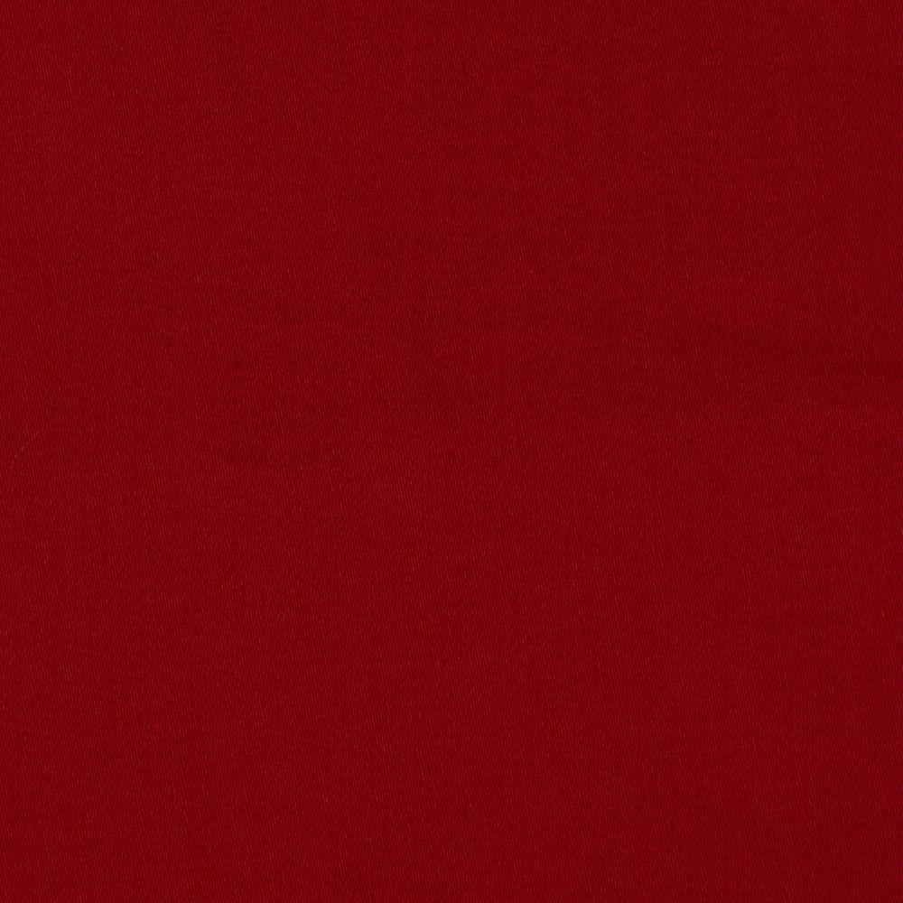

Hello, world! My name is Tiffany.
This is a webpage all about me. My likes, dislikes, ambitions, dreams, and favorite things.
Biography
I am a member of Lori Calton's Adobe Digital Design class. My favorite software is photoshop, but I also enjoy video editing. With this course, I hope to further enhance my coding skills. My favorite subject is social sciences, and I aim to major in political science in the near future!
Over the course of quarantine, I have made it a priority to write for at least an hour each day. Creative writing is my biggest hobby. If not writing, I'm usually seen gaming, streaming games, or organizing my Spotify playlists!
Here's a baby photo of myself.
My Favorite Quotation
"I would rather die than live without passion."
My Favorite Foods
- Ramen
- Sushi
- Any kind of Japenese food
My top five favorite songs, in order:
- Sarah - Alex G
- Cabinet Man - Lemon Demon
- Bohemian Rhapsody - Queen
- Jealous - Eyedress
- Sneaky Devil - The Garden
Countries I'd Like to Visit, and What I'd Like To Do There
- Italy
- Go to Venice
- Ride a boat down a river
- Eat real Italian food
- Japan
- See the Cherry Blossom
- Go to an anime convention
- Try Japenese Candy
- Europe
- Visit Brighton
- Ride the Manchester Eye
- Study Abroad
Other Favorite Things
| Favorite Flower | Cornflower | |
| Favorite Time of Day | Night | |
| Favorite Drink | Sprite or Green Tea | |
| Favorite Animal | Dogs or Raccoons | |
| Favorite Song | Sarah - Alex G | |
| Favorite Color | Red, Green, or Black |  |
Contact Information
Email: tfrancis1920@gmail.com
Phone: 704-182-3839